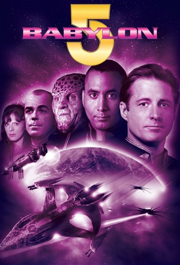

Babylon 5 (1994)
Science FictionDramaAdventureAction
| Year | 1994 |
|---|---|
| Rating | TV-PG |
| Status | Completed |
| Seasons | 6 |
| Episodes | 119 |
| Genre | Science Fiction, Drama, Adventure, Action |
Babylon 5 is a five-mile long space station located in neutral space. Built by the Earth Alliance in the 2250s, its goal is to maintain peace among the various alien races by providing a sanctuary where grievances and negotiations can be worked out among duly appointed ambassadors. A council made up of representatives from the five major space-faring civilizations - the Earth Alliance, Minbari Federation, Centauri Republic, Narn Regime, and Vorlon Empire - work with the League of Non-Aligned Worlds to keep interstellar relations under control. Aside from its diplomatic function, Babylon 5 also serves as a military post for Earth and a port of call for travelers, traders, businessmen, criminals, and Rangers.
Episodes
Specials
Special installments of the series.
| # | Title | Air Date | Synopsis |
|---|---|---|---|
| 1 | Babylon 5: The Gathering | 1993-02-22 | The opening of a crucial space station is put in jeopardy when the commanding officer is accused of the attempted murder of a diplomat. |
| 2 | Babylon 5: In the Beginning | 1998-01-04 | The Earth military encounters an alien race called the Minbari. Through a series of accidents and misunderstandings, a war breaks out that nearly results in the death of every human on Earth. The war and its aftermath pr |
| 3 | Babylon 5: Thirdspace | 1998-07-19 | The crew of Babylon 5 discover a mysterious artifact of unknown origin. The artifact influences the minds of people aboard the station and endangers the lives of everyone aboard |
| 4 | Babylon 5: The River of Souls | 1998-11-08 | Captain Lochley now has solid proof that Garibaldi is a disaster magnet: when he comes to the station to meet with one of his new company's subordinates, she's being sued by the owner of an illegal virtual reality "holo- |
| 5 | Babylon 5: A Call to Arms | 1999-01-03 | A technomage named Galen predicts an imminent attack by the Drakh, the old allies of the Shadows. Through dreams, a thief, a captain, and a president are brought together to head them off. The president is John Sheridan. |
| 6 | Babylon 5: The Legend of the Rangers - To Live and Die in Starlight | 2002-01-19 | After being punished for retreat from combat, Ranger David Martel is given command of the Liandra, a haunted 20-year old Minbari fighting ship. He's escorting ambassadors to a secret archaeological site, the oldest city |
| 7 | Babylon 5: The Lost Tales - Voices in the Dark | 2007-07-31 | It's the tenth anniversary of the Interstellar Alliance, and President Sheridan is on his way to Babylon 5 for the celebration. However, he must first deal with a threat from the future, while Lochley handles a case of d |
| 11 | The Making of Babylon 5 | 1994-01-15 | Walter Koenig hosts a behind-the-scenes look at Babylon 5. This special aired prior to the original series premiering in January 1994. |
| 12 | Babylon 5: The Road Home | 2023-08-15 | Travel across the galaxy with John Sheridan as he unexpectedly finds himself transported through multiple timelines and alternate realities in a quest to find his way back home. Along the way he reunites with some famili |
Signs and Portents
In the year 2258, it is ten years after the Earth-Minbari War. Commander Sinclair takes command of a giant five-mile-long cylindrical space station, orbiting a planet in neutral space.
| # | Title | Air Date | Synopsis |
|---|---|---|---|
| 1 | Midnight on the Firing Line | 1994-01-26 | When the Narn attack a Centauri colony, Londo and G'Kar nearly come to blows. Meanwhile, raiders are attacking transport ships near the station. |
| 2 | Soul Hunter | 1994-02-02 | A badly damaged ship is brought into the station and the strange alien inside is identified as a soul hunter - an immortal race who can sense death and supposedly steal someone's soul. |
| 3 | Born to the Purple | 1994-02-09 | Londo unknowingly falls for a beautiful slave, whose owner wants her to steal sensitive information. Garibaldi discovers that someone is using a restricted communications channel. |
| 4 | Infection | 1994-02-16 | Dr. Franklin gets a visit from an old friend and former mentor, xenoarchaeologist Dr. Vance Hendricks who wants Franklin's help to analyze some organic artifacts he found on a dead world. But the artifacts seem to have a |
| 5 | The Parliament of Dreams | 1994-02-23 | Sinclair's old flame, Catherine Sakai, arrives during a week-long festival when humans and aliens demonstrate their dominant religious beliefs. An old enemy sends an assassin to kill G'Kar. |
| 6 | Mind War | 1994-03-02 | The Psi-Cops arrive at the station to capture a rogue telepath, Talia's old Psi Corps instructor. Catherine Sakai is warned not to survey Sigma 957 by G'Kar. |
| 7 | The War Prayer | 1994-03-09 | A racist group is terrorizing non-humans on Babylon 5. Meanwhile Londo has trouble with two young Centauri who want to break with tradition by ignoring their arranged marriages, and instead marry for love. |
| 8 | And the Sky Full of Stars | 1994-03-16 | Sinclair is kidnapped and interrogated by two men determined to prove he betrayed earth during the Battle of the Line. |
| 9 | Deathwalker | 1994-04-20 | Na'Toth attacks an alien woman that has just arrived on the station, claiming that she is the Dilgar war criminal Jha'dur - known as Deathwalker. Meanwhile, Talia is hired by Kosh to oversee some rather strange negotiati |
| 10 | Believers | 1994-04-27 | An alien couple comes to Dr. Franklin with their fatally ill son. The child could be cured by a simple operation, but the parents' religion specifically forbids it. Meanwhile, Ivanova escorts a damaged star liner through |
| 11 | Survivors | 1994-05-04 | There is an explosion in one of the fighter bays just days before the president is to visit Babylon 5. A dying man implicates Garibaldi, which is just what the head of presidential security wants to hear, as she blames h |
| 12 | By Any Means Necessary | 1994-05-11 | The station's dock workers stage an illegal strike after an accident in the docking bays. G'Kar tries to take part in a Narn religious ceremony, but must find a replacement G'Quan-Eth plant that was destroyed in the acc |
| 13 | Signs and Portents | 1994-05-18 | A Centauri noble comes to Babylon 5 to transport an important relic in Londo's possession back to the homeworld. And a mysterious man visits all the alien ambassadors asking them an unusual question. |
| 14 | TKO | 1994-05-25 | Garibaldi is surprised when an old friend comes to Babylon 5 to fight in the "Mutai" - a savage alien fighting arena. Meanwhile, Ivanova has trouble dealing with her father's death. |
| 15 | Grail | 1994-07-06 | A man comes to Babylon 5 asking the alien ambassadors for information that can help him with his quest to find the Holy Grail, while a Downbelow gangster gives security problems by mind-wiping all who oppose him. |
| 16 | Eyes | 1994-07-13 | Sinclair's decisions the last year catch up with him, when an internal affairs investigator arrives to test the crew's loyalty to Earth Force with the help of a telepath. And Lennier shows great interest in Garibaldi's a |
| 17 | Legacies | 1994-07-20 | A Minbari war cruiser comes to Babylon 5 to display the body of a recently dead Minbari leader, while Ivanova and Talia battle for the fate of a young girl with newly discovered telepathic powers. |
| 18 | A Voice in the Wilderness (1) | 1994-07-27 | Strange signals start coming from Epsilon 3, the planet below Babylon 5. A science ship is sent to investigate, but is fired upon by a defense system on the planet. Meanwhile Garibaldi worries about a lover he left back |
| 19 | A Voice in the Wilderness (2) | 1994-08-03 | The situation heats up when an Earth Force heavy cruiser arrives to "protect Earth's interests", and the fusion reactors on Epsilon 3 start going out of control, and may blow up the planet and Babylon 5. |
| 20 | Babylon Squared | 1994-08-10 | Babylon 4 reappears at the same place it disappeared four years before, and Sinclair and Garibaldi lead an expedition to evacuate its crew. Meanwhile Delenn is summoned by the Grey council. They inform her that they have |
| 21 | The Quality of Mercy | 1994-08-17 | Dr. Franklin investigates an unlicensed medical practitioner in Downbelow, while Londo takes Lennier for a tour of Babylon 5's seedier locales. And in the brig, a convicted murderer waits for his sentence to be carried o |
| 22 | Chrysalis | 1994-10-26 | The Centauri are about to withdraw from a quadrant of space because the Narn are harassing them, when Londo gets an offer to take care of the problem. Meanwhile, Garibaldi tries to find out what his informant stumbled up |
The Coming of Shadows
In 2258, the orbiting space station Babylon 5 gets a controversial, new leader and prepares to serve as the last defense against a terrifying race known as the Shadows.
| # | Title | Air Date | Synopsis |
|---|---|---|---|
| 1 | Points of Departure | 1994-11-02 | Sheridan arrives at Babylon 5 to replace Sinclair and deal with a renegade Minbari Cruiser. |
| 2 | Revelations | 1994-11-09 | Sheridan's sister comes to visit him at his new command, G'Kar returns with grave tidings from the rim of known space, Dr. Franklin tries to wake Gribaldi from the coma with the alien healing device obtained from Dr. Ros |
| 3 | The Geometry of Shadows | 1994-11-16 | A mysterious group known as ""techno-mages"" take up temporary residence at Babylon 5 and Londo is very eager to get an audience with them. Meanwhile the Drazi cause problems for the newly promoted Commander Ivanova with |
| 4 | A Distant Star | 1994-11-23 | A giant explorer class ship comes to Babylon 5 for re-supply - it's captain an old friend of Sheridan. Dr. Franklin gets on the command staffs nerves when he starts handing out "food plans". |
| 5 | The Long Dark | 1994-11-30 | A 100-year-old space exploration ship appears near Babylon 5 with two passengers - a woman in cryogenic sleep, the corpse of her husband... and something sinister that has unfinished business with a half mad lurker. |
| 6 | Spider in the Web | 1994-12-07 | A friend of Talia comes to Babylon 5 to negotiate a deal to help Mars become more self-sufficient, when a man calling out "Free Mars!" electrocutes him. |
| 7 | Soul Mates | 1994-12-14 | Londo summons his three wives to Babylon 5 so he can divorce two of them, Talia gets a visit from her obnoxious ex-husband - the only man ever to leave the PSI Corps... and Delenn has her first bad hair day. |
| 8 | A Race Through Dark Places | 1995-01-26 | Bester returns to Babylon 5 to shut down an underground organization that smuggles rogue telepaths out of the PSI Corps reach. Meanwhile Sheridan has some disagreements with Earthforce over the rent of his quarters. |
| 9 | The Coming of Shadows | 1995-02-02 | The aging Centauri emperor travels to Babylon 5 despite his failing health. Refa sees this as an opportunity to have Londo publicly embarrass the emperor, while G'Kar prepares to assassinate him. |
| 10 | GROPOS | 1995-02-09 | Babylon 5 gets considerable space problems when 25,000 Earthforce soldiers arrive. Led by General Richard Franklin, Stephen Franklin's father, they are to use Babylon 5 as a staging point for a risky military operation. |
| 11 | All Alone in the Night | 1995-02-16 | While leading a Starfury squadron to investigate the disappearance of several ships, Sheridan is captured by an alien vessel. Meanwhile Delenn is summoned to appear before the Grey Council to discuss her recent change in |
| 12 | Acts of Sacrifice | 1995-02-23 | G'Kar struggles to control the Narns on Babylon 5 as he asks the different ambassadors for help in the war against the Centauri. Ivanova shows a representative from a new species around the station, so he may decide if h |
| 13 | Hunter, Prey | 1995-03-02 | The president's physician comes to Babylon 5 on the run from Earthforce special intelligence. They say he has classified information he plans to sell to alien governments, though Sheridan soon learns otherwise. |
| 14 | There All the Honor Lies | 1995-04-27 | Sheridan is assaulted by the Minbari Lovell, and is forced to kill him in self-defense. But a Minbari who witnessed the incident claims Sheridan assaulted Lovell - and everybody knows Minbari do not lie. |
| 15 | And Now for a Word | 1995-05-04 | We see life on Babylon 5 through the eyes of ISN, supplemented by interviews, statistics and even a few commercials. |
| 16 | In the Shadow of Z'ha'dum | 1995-05-11 | Sheridan is shocked to learn that one of the crew of the Icarus, a science ship that exploded with his wife aboard, is alive - namely Mr. Morden. A representative of the Ministry of Peace comes to the station to recruit |
| 17 | Knives | 1995-05-18 | Londo gets a visit from an old friend who seeks his help after being called a traitor by the Centarum. Sheridan starts hallucinating after being attacked by a dead alien. |
| 18 | Confessions and Lamentations | 1995-05-25 | A 100% fatal and 100% contagious plague is killing the Markabs. Dr. Franklin tries to find a cure, but is being opposed by the Markabs themselves, who believe the plague only affect the immoral. |
| 19 | Divided Loyalties | 1995-10-12 | Lyta Alexander returns to Babylon 5 with a message from the telepath resistance - one of the command staff is a mole for PSI Corps. |
| 20 | The Long, Twilight Struggle | 1995-10-19 | Draal reveals himself for Sheridan, while Refa and Londo set a plan in motion that will lead to the final defeat of the Narns. |
| 21 | Comes the Inquisitor | 1995-10-26 | Kosh summons an inquisitor to test Delenn's motives, and G'Kar tries to maintain his position as leader of Babylon 5's Narn population while organizing an underground resistance. |
| 22 | The Fall of Night | 1995-11-02 | Two officials from the Ministry of Peace come to Babylon 5; one to deal with the Centauri's continued expansion, and the other to check on the local Nightwatch. Meanwhile a Narn heavy cruiser seeks sanctuary while they m |
Point of No Return
In 2260, Babylon 5's captain declares the station an independent state and forms a war council to battle the evil Shadows--and their allies on Earth.
| # | Title | Air Date | Synopsis |
|---|---|---|---|
| 1 | Matters of Honor | 1995-11-09 | An Earthforce investigator comes to B5 with Lt. Keffer's last recording, asking the ambassadors if they recognize the ship in it. Meanwhile Londo takes steps to remove himself from the Shadows, and Sheridan takes the Whi |
| 2 | Convictions | 1995-11-16 | A bomber is loose on Babylon 5; setting of bombs with seemingly no pattern. G'Kar blames the Centauri, Londo blames the Narn - and in it all, Lennier is critically injured. At the same time a group of monks request permi |
| 3 | A Day in the Strife | 1995-11-23 | The new Centauri appointed Narn government send a replacement for G'Kar while an alien probe threatens to destroy Babylon 5 unless it gets the answers for a series of complicated scientific questions. |
| 4 | Passing Through Gethsemane | 1995-11-30 | One of the monks starts having disturbing visions and realizes that his past may not be how he remembers it. Meanwhile Lyta causes a bit of commotion when she returns from the Vorlon homeworld. |
| 5 | Voices of Authority | 1996-02-01 | Delenn decides its time to try to contact some of the first ones and enlists the help of Draal, while Babylon 5 is assigned a political officer. |
| 6 | Dust to Dust | 1996-02-08 | Bester comes to the station to track down a dealer of Dust - an illegal drug that gives normal people temporary telepathic powers. G'Kar is also interested in the drug. He sees it as a potential weapon against the Centau |
| 7 | Exogenesis | 1996-02-15 | Marcus starts snooping around Downbelow when some of his contacts start behaving unusually and a lurker is found dead with a strange creature bonded to his spine. Ivanova investigates Corwin's loyalties when he receives |
| 8 | Messages from Earth | 1996-02-22 | An archeologist is brought Babylon 5 with a grave massage - a dormant Shadow ship has been found on Ganymede. It must be destroyed before it falls into the hands of President Clark. |
| 9 | Point of No Return | 1996-02-29 | Clark has just declared martial law and while Nightwatch prepare to take control of the station, Zack has to decide whose side he's on. In an exercise of bad timing, the prophetic widow of emperor Turhan finally comes to |
| 10 | Severed Dreams | 1996-04-04 | The renegade destroyer ""Alexander"" arrives at Babylon 5 and Sheridan is forced to announce the station's secession from the Earth Alliance, and prepare for an attack by Clark's forces. Meanwhile Delenn is forced to go |
| 11 | Ceremonies of Light and Dark | 1996-04-11 | Delenn prepares for a ceremony of rebirth, the station's computer goes through an interesting change, Londo "encourages" Refa to stop associating with the Shadows, and the remains of the Nightwatch on Babylon 5 plan to s |
| 12 | Sic Transit Vir | 1996-04-18 | Vir returns to Babylon 5 to find that he now has a wife and that two Narns are out for his blood. Meanwhile Ivanova investigates the activities of the mysterious Centauri Abrahamo Linconi. |
| 13 | A Late Delivery from Avalon | 1996-04-25 | A mysterious man comes to Babylon 5 dressed in chainmail and armed with a sword. His name? King Arthur - Son of Uther Pendragon, come to help when he is needed most. |
| 14 | Ship of Tears | 1996-05-02 | Bester comes to Babylon 5, this time seeking help against a common enemy - the Shadows. Meanwhile G'Kar demands to be included in the War Council. |
| 15 | Interludes and Examinations | 1996-05-09 | Morden returns to secure Londo's cooperation again, Garibaldi confronts Franklin about the stims and Kosh gives Sheridan a victory against the Shadows - but at a price. |
| 16 | War Without End (1) | 1996-05-16 | Ivanova gets a distress call from herself pleading for help as the Shadows destroy Babylon 5. It is dated eight days into the future. At the same time, on Minbar, Sinclair is given a nine-hundred-year-old letter from Val |
| 17 | War Without End (2) | 1996-05-23 | While Sheridan is unstuck in time, seeing a glimpse of a future Centauri Prime in ruins, the others continue with their plan to take Babylon 4 back in time. |
| 18 | Walkabout | 1996-10-03 | The new Vorlon ambassador arrives, Sheridan decides it's time to test just how effective telepaths are against the Shadow ships, and Franklin is on walkabout in Downbelow and falls in love with a singer. |
| 19 | Grey 17 Is Missing | 1996-10-10 | Garibaldi investigates an area where a maintenance worker disappeared and finds a whole floor that was forgotten after construction, including its rather strange inhabitants. Meanwhile Delenn is about to take on the role |
| 20 | And the Rock Cried Out, No Hiding Place | 1996-10-17 | Londo forces Vir to participate in a plan to kill G'Kar. Sheridan struggles with figuring out the Shadows' tactics. |
| 21 | Shadow Dancing | 1996-10-24 | With the Shadows next target known, a massive counterattack is prepared. Ivanova and Marcus scout ahead in the White Star, while the fleet stands by in hyperspace. At the same time, Franklin finally has to face his probl |
| 22 | Z'ha'dum | 1996-10-31 | After he has recovered from the shock of seeing her, Anna gives Sheridan an ultimatum - come to Z'ha'dum with her, or never know what happened to her there. |
No Surrender, No Retreat
In 2261, Babylon 5 and its allies involved the mighty Shadow into a mighty power struggle, and the station captain endeavors to unveil the rampant corruption on Earth.
| # | Title | Air Date | Synopsis |
|---|---|---|---|
| 1 | The Hour of the Wolf | 1996-11-07 | In the aftermath of the explosion on Z'ha'dum, Sheridan is presumed dead and Garibaldi is missing. Delenn struggles to keep the alliance against the Shadows together, and Londo takes up his new position on Centauri Prime |
| 2 | Whatever Happened to Mr. Garibaldi? | 1996-11-14 | On Z'ha'dum, Sheridan floats somewhere in-between life and death. Meanwhile G'Kar risks imprisonment to try to find Garibaldi. |
| 3 | The Summoning | 1996-11-21 | Ivanova and Marcus take a White Star out to search for more first ones to aid in the war, while Londo tries to convince G'Kar to swallow his pride so Cartagia will find him entertaining. A mysterious spacecraft makes its |
| 4 | Falling Toward Apotheosis | 1996-11-28 | With the Vorlons destroying whole worlds, Babylon 5 is struggling to cope with the refugees. And with one Vorlon aboard, they cannot make a move without them knowing about it. So Sheridan decides to kill him. On Centauri |
| 5 | The Long Night | 1997-01-30 | As reports that the Shadows are destroying planets too start to come in, Sheridan prepares for one final showdown with the Shadows and the Vorlons. Meanwhile on Narn, Londo makes everything ready - G'Kar's chains have be |
| 6 | Into the Fire | 1997-02-06 | In the hours before the Shadows and the Vorlons meet Sheridan's alliance at Corriana 6, Ivanova and Lorien search for the last of the First Ones, and Londo races back to Centauri Prime in hope of removing all Shadow infl |
| 7 | Epiphanies | 1997-02-13 | Bester comes to Babylon 5 with information about President Clark's plans to discredit the station. But it has a price tag attached - he wants them to go to Z'ha'dum to look for any leftover technology that might help rev |
| 8 | The Illusion of Truth | 1997-02-20 | A team of ISN reporters arrives at the station wanting to do a story about Babylon 5. Sheridan refuses at first, but finally agrees on the theory that at least a small part of their side of the conflict will be shown. |
| 9 | Atonement | 1997-02-27 | When her clan has doubts about her reason for taking Sheridan as a mate, Delenn is required to go to Minbar to attend "the Dreaming". Sheridan sends Marcus and Franklin to Mars to make contact with the resistance there. |
| 10 | Racing Mars | 1997-04-24 | Marcus and Franklin meet their liaison to the Mars resistance, but are greeted at gunpoint by the resistance itself. Meanwhile Sheridan confronts Garibaldi about his attitude. |
| 11 | Lines of Communication | 1997-05-01 | Delenn investigates attacks on ships of races allied with the Minbari, and encounters the Drakh for the first time. On Mars, Franklin rallies the resistance leaders to Sheridan's cause. |
| 12 | Conflicts of Interest | 1997-05-08 | Garibaldi gets his first assignment from his new employer - helping someone getting on and off the station without having to pass through customs. He is quite surprised at who this person is. Meanwhile Ivanova makes prep |
| 13 | Rumors, Bargains and Lies | 1997-05-15 | Sheridan hatches an eccentric plan to convince the League to accept White Star patrols on their borders, while Delenn seeks help from Neroon to end the civil war that has broken out on Minbar. |
| 14 | Moments of Transition | 1997-05-22 | The warrior caste has surrounded the religious caste's stand in the capital city on Minbar, and demand they surrender or be destroyed. Meanwhile Bester makes Lyta an offer for her body. |
| 15 | No Surrender, No Retreat | 1997-05-29 | With Clark having killed 10,000 unarmed refugees, Sheridan once again mobilizes for war. The first target is Proxima 3, which is being bombed into submission. At the same time, Londo tries to get G'Kar to partake in a jo |
| 16 | Exercise of Vital Powers | 1997-06-05 | As Sheridan's forces continue towards Earth, Garibaldi is finally allowed to meet his employer, William Edgars, face to face on Mars, and is after telepath assisted interrogation finally told what he must do to gain Edga |
| 17 | The Face of the Enemy | 1997-06-12 | Sheridan's father is arrested. When Garibaldi gives his former commander the news, he urges him to come to Mars to arrange a rescue operation... |
| 18 | Intersections in Real Time | 1997-06-19 | In a bleak room, an interrogator tries to force Sheridan to admit he was under alien influence and worked to undermine Earth. |
| 19 | Between the Darkness and the Light | 1997-10-09 | Garibaldi is barely able to convince Lyta and Franklin that his recent behavior was caused by Bester, and they organize a rescue for Sheridan. Meanwhile, Ivanova gets word that a trap has been set at the fleets' next ren |
| 20 | Endgame | 1997-10-16 | The only obstacle remaining between Sheridan and Earth is a fleet near Mars. With the help of the resistance, Sheridan plans to smuggle Shadow modified telepaths onto the fleet, hopefully disabling it long enough for him |
| 21 | Rising Star | 1997-10-23 | Clark is dead and the civil war is over, but several issues are unresolved. Ivanova is grief struck and Lise is missing. And Sheridan must now face the consequences of his actions. He did the right thing - but in the inc |
| 22 | The Deconstruction of Falling Stars | 1997-11-30 | Far into the future, someone is archiving video clips pertaining to the fate of Earth and the Interstellar Alliance. |
The Wheel of Fire
In 2262, longstanding conflicts between telepaths and normal humans lead to a major clash on Babylon 5, and the former captain of the station continues its peacekeeping mission by forming the InterStellar Alliance.
| # | Title | Air Date | Synopsis |
|---|---|---|---|
| 1 | No Compromises | 1998-01-21 | Lochley takes command of Babylon 5 and Byron petitions her for asylum aboard the station. An assassin pledges to kill Sheridan at his inauguration. |
| 2 | The Very Long Night of Londo Mollari | 1998-01-28 | Londo collapses from a heart attack, and must battle with his guilt in a dream state. Delenn learns that Lennier is planing to leave Babylon 5 to join the Rangers. |
| 3 | The Paragon of Animals | 1998-02-04 | A small world plagued by raiders begs the alliance for help. Garibaldi tries forming an intelligence unit of telepaths. |
| 4 | A View from the Gallery | 1998-02-11 | We see the action from the viewpoint of two maintenance workers as a race of savage aliens attacks the station. |
| 5 | Learning Curve | 1998-02-18 | Four rangers come from Minbar with a status report to Delenn, while a Downbelow racketeer decides it's time to get rid of Zack. |
| 6 | Strange Relations | 1998-02-25 | Bester arrives at the station to arrest the Downbelow telepaths, and Londo barely escapes an assassination attempt when the ship he was to be aboard explodes. |
| 7 | Secrets of the Soul | 1998-03-04 | As more telepaths arrive at the station, the denizens of Downbelow start taking notice. Tensions build until one of the telepaths is assaulted, and the others decide to take revenge - against Byron's wishes. Meanwhile, F |
| 8 | Day of the Dead | 1998-03-11 | The Brakiri buy a part of Babylon 5 for a religious ceremony where the dead are supposed to return. Comedians Rebo and Zooty arrive to do a show on the station. |
| 9 | In the Kingdom of the Blind | 1998-03-18 | Londo starts to suspect that all is not right on Centauri Prime, when a good friend is murdered. On Babylon 5, Byron tries to force the council to give him and his telepaths a homeworld of their own. |
| 10 | A Tragedy of Telepaths | 1998-03-25 | The telepaths have barred themselves inside an area of Downbelow, and their telepathic tricks force Lochley to ask Bester for help. G'Kar finds an old friend locked in a cell in the Centauri palace. |
| 11 | Phoenix Rising | 1998-04-01 | More bloodhound units arrive and the fight with the violent faction of Byron's followers intensifies... until the rogues seize medlab - with Garibaldi and Franklin in it. |
| 12 | The Ragged Edge | 1998-04-08 | It looks like the Alliance will get a break in the investigation of the recent shipping line attacks, when a possible witness may have survived the latest attack and taken refuge on the Drazi homeworld. Garibaldi is sent |
| 13 | The Corps is Mother, the Corps is Father | 1998-04-15 | A telepath murders his roommate and escapes on a ship bound for Babylon 5. Bester is given the job of capturing him, and brings along two PSI Cop interns to show them how he works. |
| 14 | Meditations on the Abyss | 1998-05-27 | Delenn reassigns Lennier to a Ranger training mission on the border of Centauri space, hoping he can find some proof regarding the Centauri involvement in the shipping line attacks. Vir undergoes some dramatic changes wh |
| 15 | Darkness Ascending | 1998-06-03 | Lennier investigates Centauri signals that may be connected to the attacks. Lyta tries to continue Byron's dream of finding a homeworld for telepaths. Lise visits Garibaldi only to discover he's drinking again. |
| 16 | And All My Dreams, Torn Asunder | 1998-06-10 | The evidence collected against the Centauri is presented to the council of the Interstellar Alliance, and a boycott against the Centauri is issued. In reaction, the Centauri withdrawal from the Alliance and making it cle |
| 17 | Movements of Fire and Shadow (1) | 1998-06-17 | Sheridan finally authorizes the White Star fleet to participate in the war. Delenn travels to Minbar to start a Minbari/Earth joint project to build a prototype White Star destroyer class ship. And Vir hires Franklin and |
| 18 | The Fall of Centauri Prime (2) | 1998-10-28 | As Centauri Prime is being bombarded, the Drakh, the real masters behind the war, reveal themselves to Londo. They force him to go along with their plan to alienate the Centauri from the Alliance, and use what's left as |
| 19 | The Wheel of Fire | 1998-11-04 | Earthforce orders the arrest of Lyta for financing terrorism against the PSI Corp. Sheridan confronts Garibaldi about his drinking. G'Kar struggles with his growing mass of worshippers. |
| 20 | Objects in Motion | 1998-11-11 | Tessa Holloran, former Number One of the Mars resistance, arrives with a warning for Lise and Michael - an assassin has been hired to kill them. Meanwhile, G'Kar gets ready to leave, though not everybody is happy about i |
| 21 | Objects at Rest | 1998-11-18 | It is near the end of 2262, and many changes are abound. Londo, G'Kar and Garibaldi have already left, and Franklin will be taking up his new position on Earth shortly. Finally, Sheridan and Delenn leave for Minbar, wher |
| 22 | Sleeping in Light | 1998-11-25 | Twenty years after his death and resurrection at Z'ha'dum, Sheridan feels his life force ebbing away, and invites some old friends for a final gathering. |